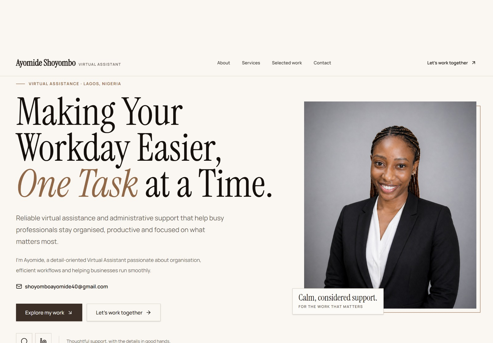

PROJECT 01
Virtual Assistant Portfolio
A professional portfolio website created to showcase my virtual assistance services, skills, professional background and selected projects. It provides visitors with an overview of my capabilities and an easy way to get in touch.
Tools: Lovable, HTML, CSS and JavaScript
View project →